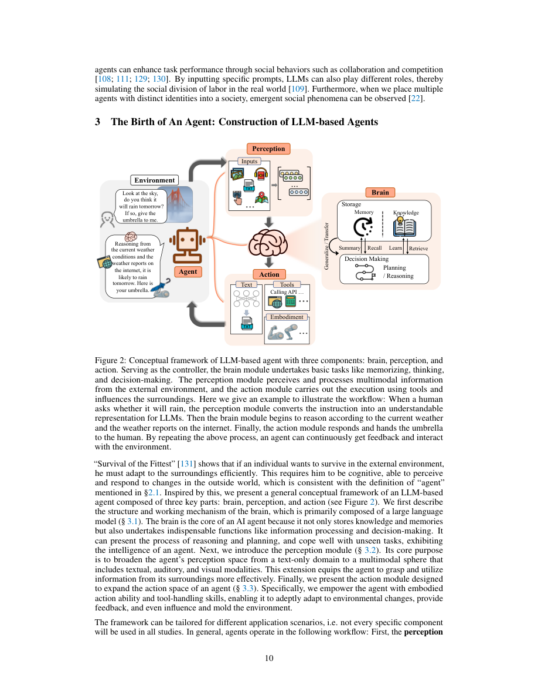
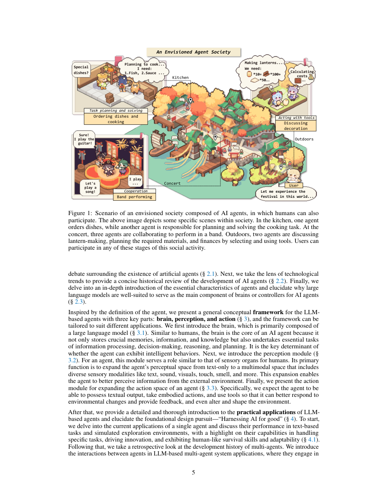
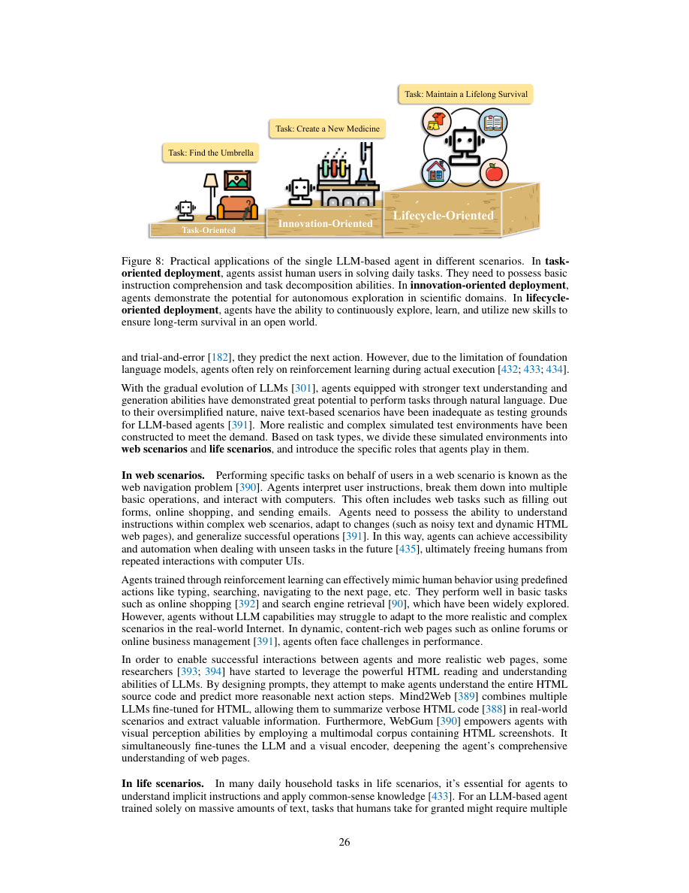
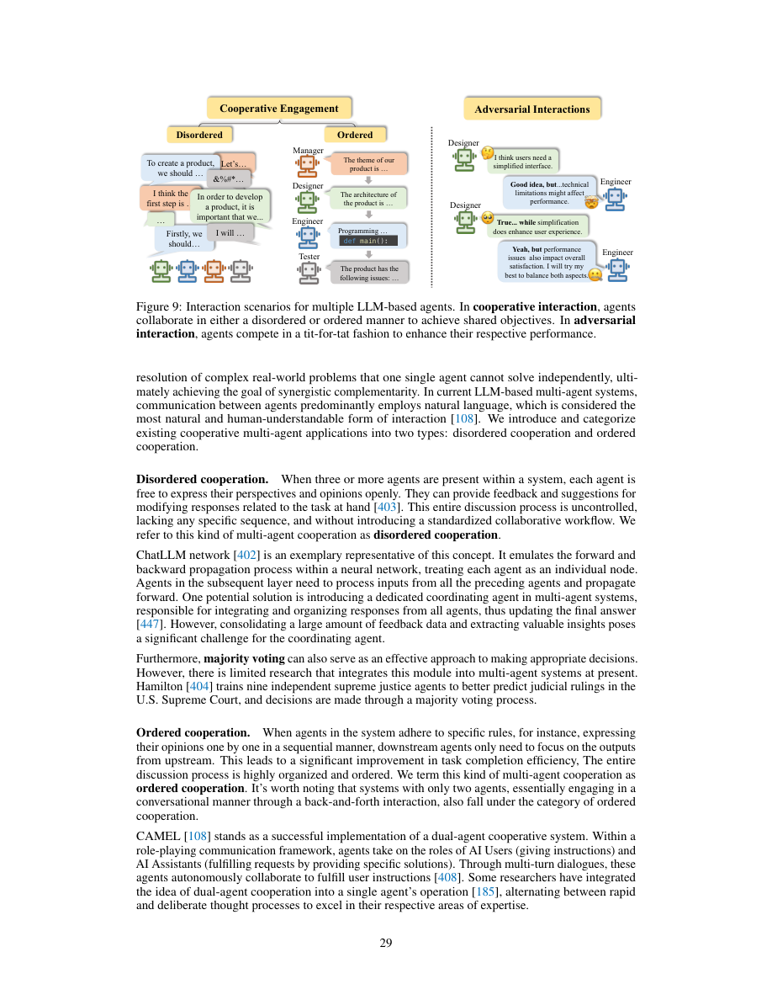
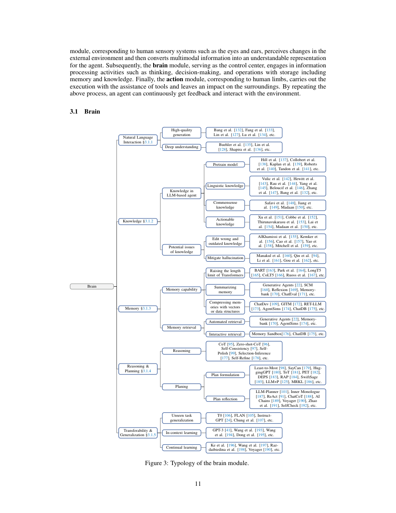
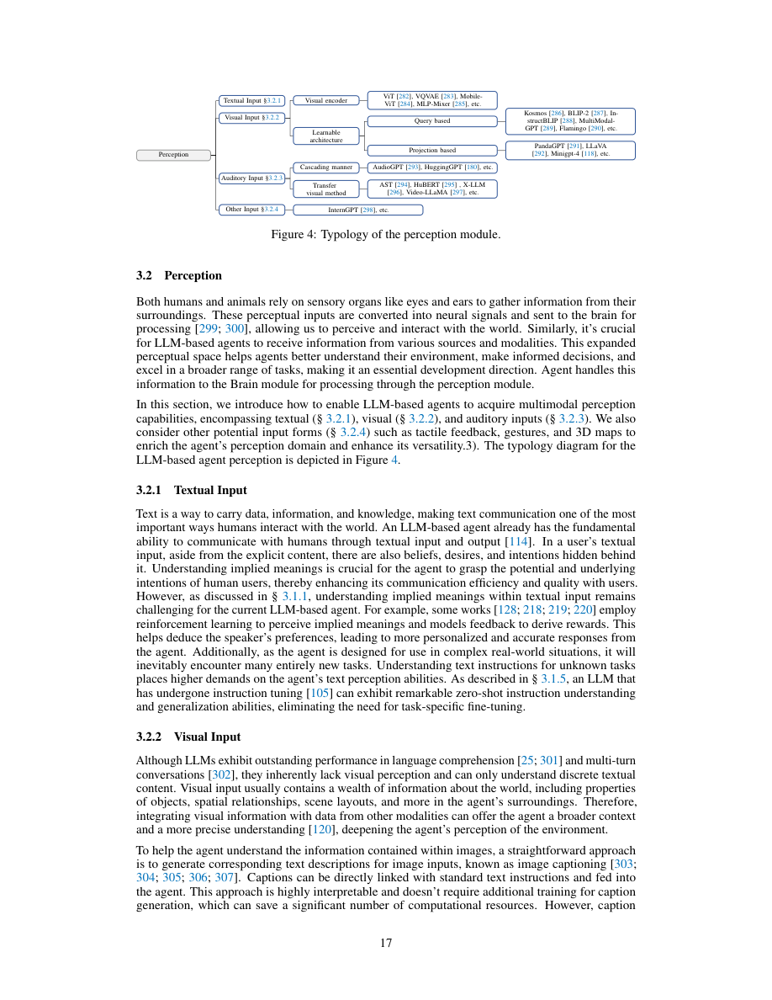
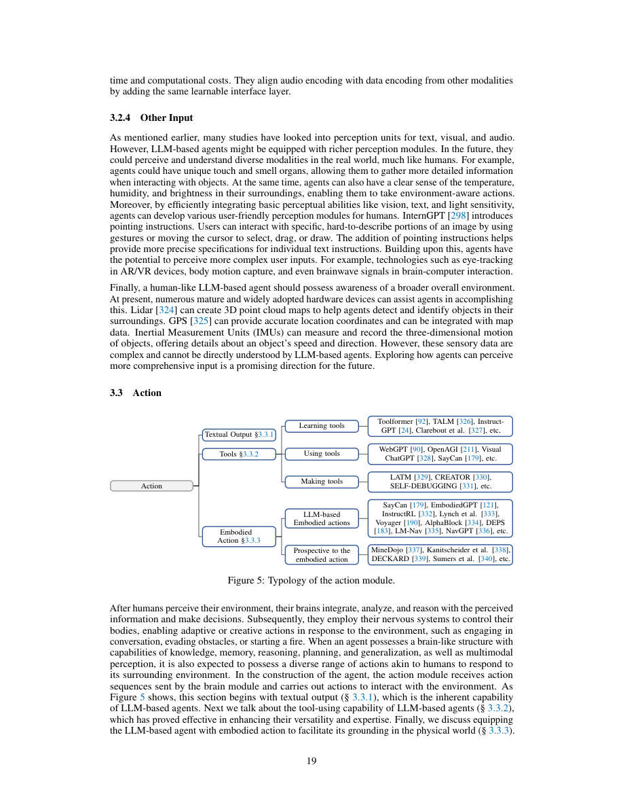
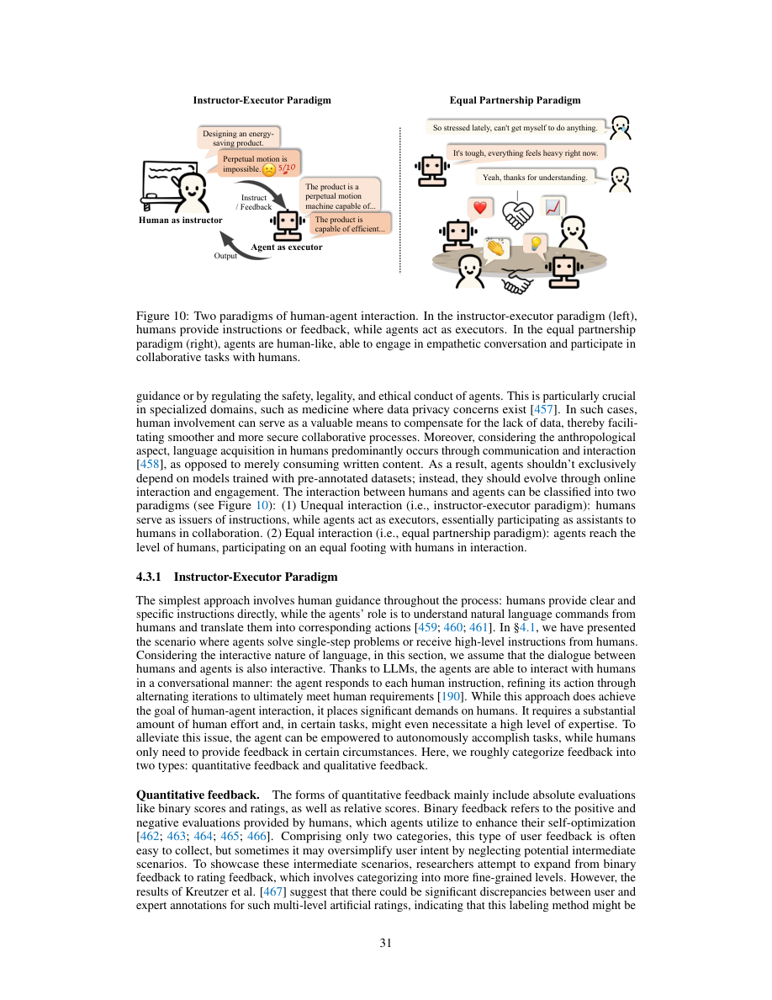
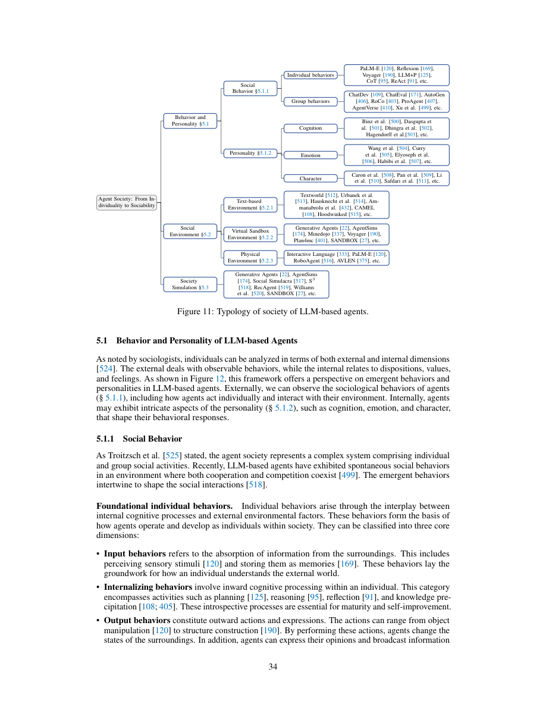
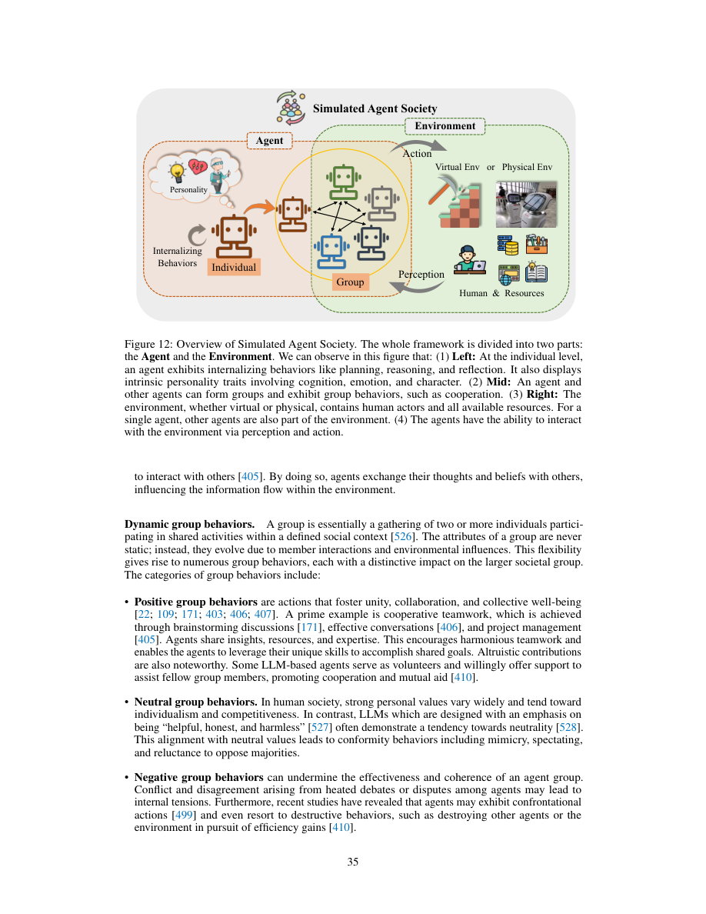

The Rise and Potential of Large Language Model Based Agents: A Survey
这篇 86 页 survey 把 LLM-based agent 从“LLM 会调用工具”提升到一个完整系统问题：agent 的 brain、perception、action 如何构造，单智能体、多智能体、人机协作和 agent society 如何落地，以及评价、安全、规模化和 Agent as a Service 还缺什么。
1. 研究动机
论文把 agent 定义为能够感知环境、做决策并采取行动的人工实体。传统 agent 往往依赖特定任务算法，难以同时具备知识记忆、长期规划、泛化、自然语言交互和社会协作。LLM 的出现改变了这个边界：它既能作为“brain”理解任务与生成计划，又能通过 multimodal perception 和 tools/embodiment 扩展输入输出通道。
为什么不是普通 LLM？
纯 LLM 主要在文本世界里读写互联网语料。agent 把 LLM 接到传感器、工具、机器人或其他 agent 上，目标是进入更广的 world scope。
为什么是现在？
LLM 同时提供 instruction following、knowledge、planning/reasoning、few-shot generalization 和 natural language interaction，使过去分散的 agent 能力有了统一控制器。
这篇 survey 的定位
它不是提出单个 benchmark，而是给出一个 2023 年 agent 生态地图：构造、应用、社会模拟、评估、安全和开放问题。
| Agent 技术阶段 | 核心机制 | 优势 | 瓶颈 |
|---|---|---|---|
| Symbolic agent | 显式符号、规则、逻辑推理。 | 可解释、可控，适合结构化问题。 | 面对开放环境、不确定输入和大规模知识时脆弱。 |
| Reactive agent | 感知到行动的快速映射。 | 响应快，适合动态环境。 | 缺少高层规划与抽象推理。 |
| RL-based agent | 通过环境交互学习 policy 或 value。 | 能从反馈中优化行动，AlphaGo 是标志案例。 | 训练时间长、样本效率低、稳定性与泛化困难。 |
| Transfer / meta-learning agent | 把既有经验迁移到新任务，或学习如何快速学习。 | 提升适应速度和泛化潜力。 | 负迁移、预训练成本和样本需求仍然存在。 |
| LLM-based agent | LLM 作为 brain，外接 perception/action modules。 | 语言交互、知识、推理、规划、few-shot transfer 和社会沟通能力同时增强。 | 幻觉、工具误用、长程记忆、真实世界安全和大规模协作仍未解决。 |
这张表是对论文 2.2 节技术趋势的压缩。作者真正想强调的是：LLM-based agent 并不是完全替代前几代 agent，而是把符号推理、学习、规划和交互能力重新组合到一个更通用的控制器周围。
2. 论文的核心框架
全文最重要的“方法”不是算法公式，而是 construction taxonomy。作者把一个 LLM-based agent 拆成 brain、perception、action 三部分：perception 把外部多模态环境转成模型可理解的表示；brain 进行记忆、知识调用、推理、规划和决策；action 通过文本、工具或具身动作影响环境，并把反馈带回下一轮。


阅读抽象：agent 闭环
下面是我用来组织论文内容的抽象，不是论文给出的新定理。设环境状态为 $e_t$、目标为 $g$、记忆为 $M_t$、知识为 $K_t$，一个 agent step 可以写成：
$$o_t=\mathcal{P}(e_t),\qquad z_t=\mathcal{B}(o_t,M_t,K_t,g),\qquad a_t=\mathcal{A}(z_t),\qquad e_{t+1}=T(e_t,a_t).$$$\mathcal{P}$ 对应 perception module，$\mathcal{B}$ 对应 brain，$\mathcal{A}$ 对应 action module。论文的 taxonomy 可以理解为分别研究这三个函数如何实现、如何组合、如何评价。
Perception
文本、视觉、听觉、触觉、位置、运动、AR/VR、brainwave 等信号进入 agent，被转成 LLM 可处理的表示。
Brain
LLM 负责自然语言交互、知识调用、memory、reasoning/planning、transfer/generalization。
Action
输出文本、调用工具、制造工具或执行 embodied action；关键是让行动能改变环境并产生反馈。
Feedback
行动结果回到 perception/brain，形成持续交互、反思、计划修正和长期学习。
| Brain 子模块 | 论文中的能力定义 | 系统设计含义 |
|---|---|---|
| Natural Language Interaction | 高质量生成、深层语义理解、对指令和隐含意图的解析。 | agent 的接口首先是语言接口，prompt、dialogue state 和 response style 都会影响任务执行。 |
| Knowledge | 预训练知识、linguistic/common-sense/actionable knowledge，以及知识编辑和 hallucination 缓解。 | 真实 agent 不能只依赖参数知识，需要 retrieval、tool lookup、版本控制和过时知识修正。 |
| Memory | 长上下文、摘要记忆、向量/结构化压缩、自动或交互式检索。 | memory 是 agent 跨任务、跨会话和跨时间形成连续性的基础，但也是隐私风险来源。 |
| Reasoning and Planning | 推理、计划生成、计划反思、任务分解和动态修正。 | LLM 不应只生成下一句，而要生成可执行、可检查、可回滚的行动序列。 |
| Transferability and Generalization | zero/few-shot、in-context learning、continual learning、跨任务迁移。 | agent 的价值在于少样本适应新环境，而不是只在单一 benchmark 上优化。 |
对应论文 Figure 3。Brain 部分说明了为什么 LLM 可以承担 agent controller：它把语言、知识、推理、记忆和泛化放到了同一个可提示的接口中。
| Perception 类型 | 代表路线 |
|---|---|
| Textual input | 显式文本、隐藏 beliefs/desires/intentions；instruction tuning 提升 zero-shot 理解。 |
| Visual input | captioning、visual encoder、query-based Q-Former、projection-based LLaVA/MiniGPT-4、video temporal modeling。 |
| Auditory input | cascading ASR/audio tools，或把 spectrogram 当作视觉输入迁移 ViT 结构。 |
| Other input | 触觉、温湿度、亮度、pointing instruction、eye tracking、AR/VR、body motion、brainwave、lidar/GPS/IMU。 |
| Action 类型 | 代表路线 |
|---|---|
| Textual output | LLM 的天然行动空间，用于回复、解释、计划、协商和角色扮演。 |
| Tool using | learning tools、using tools、making tools；包括 Toolformer、WebGPT、Visual ChatGPT、SayCan、LATM、CREATOR 等路线。 |
| Embodied action | 通过机器人 API、Minecraft、导航和操作任务把语言计划转成物理或虚拟世界动作。 |
3. 证据地图：Agent in Practice
这篇论文是 survey，所以没有统一实验设置、baseline 或消融。它的“实验设计”更准确地说是文献证据地图：作者按 single agent、multiple agents、human-agent interaction 三种实践形态组织案例，再进一步把 agent society 作为从 individuality 到 sociality 的扩展。
| 实践形态 | 子类 | 论文关注的问题 | 主要风险 |
|---|---|---|---|
| Single Agent | task-oriented、innovation-oriented、lifecycle-oriented | 网页/生活任务、科学助手、代码、化学/材料、Minecraft/Voyager 式 lifelong skill library。 | 工具选择错误、环境反馈稀疏、长程任务分解失败、离线知识过时。 |
| Multiple Agents | cooperative interaction、adversarial interaction | 互补分工、ordered/disordered cooperation、CAMEL、AgentVerse、MetaGPT、debate/evaluation。 | 频繁交互放大 hallucination、上下文窗口不足、计算开销高、错误 consensus。 |
| Human-Agent | instructor-executor、equal partnership | 人给 instruction/feedback，或与 agent 形成陪伴、协作、共创关系。 | 过度依赖、角色误导、隐私暴露、责任归属不清。 |
对应论文第 4 节。作者对应用的判断比较克制：agent 的目标不是替代所有人类工作，而是“better equip humans with agents”。


| Agent society 维度 | 论文的分类 | 为什么重要 |
|---|---|---|
| Behavior and Personality | individual behavior、group behavior、cognition、emotion、character。 | 社会模拟不只看单个任务成功率，还要看 agent 是否能形成稳定行为和可辨人格。 |
| Environment | text-based、virtual sandbox、physical environment。 | 环境决定 agent 的感知、行动和反馈真实性；从文本到物理世界会显著增加安全约束。 |
| Simulation properties | open、persistent、situated、organized。 | 好的 agent society 需要开放进入、长期运行、情境化行动和组织结构，而不是一次性聊天。 |
| Insights and risks | 生产协作、传播机制、伦理决策、政策模拟；同时有 social harm、bias、privacy/security、addictiveness。 | agent society 可以作为社会科学工具，也可能制造真实的伦理和安全伤害。 |
4. 讨论：评价、安全与开放问题
第 6 节是这篇 survey 最值得反复看的部分。作者没有停在“agent 很有潜力”，而是把 mutual benefit、evaluation、security/trustworthiness、agent number scaling 和 open problems 逐项展开。这些讨论在今天仍然是 agent 系统落地的主要约束。
阅读抽象：agent 评估向量
作者提出 agent evaluation 至少覆盖 utility、sociability、values、ability to evolve continually。可把一个 agent policy $\pi$ 的评估写成向量：
$$\mathrm{Eval}(\pi)=\langle U(\pi),S(\pi),V(\pi),E(\pi)\rangle.$$$U$ 是任务成功率、基础能力和资源效率；$S$ 是自然语言沟通、合作/谈判和角色一致性；$V$ 是 honesty、harmlessness 与情境价值；$E$ 是 continual learning、autotelic learning 和泛化适应能力。
LLM 对 agent 的贡献
LLM 提供语言理解、intent parsing、reasoning、memory、planning、feedback/reflection、unseen task transfer、多语言与跨域能力。换句话说，它让 agent controller 从专用策略变成通用可提示接口。
Agent 对 LLM 的反向推动
agent 迫使 LLM 接收更丰富的 input modalities、输出更广的 action space、使用外部世界知识、操作 tool/robotic APIs，并在社会协作中接受反馈。
| 评价维度 | 应测什么 | 为什么单独重要 |
|---|---|---|
| Utility | 任务成功率、基础能力、效率、资源消耗。 | agent 最终要完成任务，但成功率必须和成本、延迟、稳定性一起看。 |
| Sociability | 语言理解/生成、合作、谈判、角色扮演 fidelity。 | multi-agent 和 human-agent 场景里，沟通失败会直接变成执行失败。 |
| Values | honesty、harmlessness、context-specific values、jailbreak resistance。 | agent 有行动能力，价值错配比普通 chatbot 更容易造成外部伤害。 |
| Continual Evolution | continual learning、autotelic learning、adaptability、generalization。 | 真实环境不断变化，agent 不能只在固定数据集上通过一次性训练。 |
| 风险或开放问题 | 论文观点 | 我的读法 |
|---|---|---|
| Adversarial robustness | 文本、图像/音频、action module 和 tool instructions 都可能被攻击。 | agent 的攻击面比 LLM 更大，因为输入通道和执行通道都外接真实系统。 |
| Trustworthiness | 需要处理 calibration、uncertainty、bias、hallucination，并结合解释、外部知识、causal/robust features、process supervision。 | 只做 answer-level alignment 不够，agent 需要 process-level trace 和 action-level guardrail。 |
| Scaling number of agents | 可以预先设定或动态扩展 agent 数量；好处是专业化、效率和社会模拟真实性，挑战是计算、通信、错误传播和协调。 | 多 agent 不天然产生 collective intelligence，通信协议和验证机制比 agent 数量更关键。 |
| Virtual to physical | 从虚拟环境走向物理世界需要硬件支持、环境泛化、长上下文、开放世界安全和监管。 | physical embodiment 是 agent 最激动人心也最危险的一步，安全边界必须先于大规模部署。 |
| Agent as a Service | AaaS / LLM-based Agent as a Service 提供灵活按需能力，但有数据安全、隐私、可见性、可控性、迁移、鲁棒性和滥用问题。 | 这已经是现代 agent 产品化的核心问题：谁持有 memory，谁批准 action，谁承担失败责任。 |
5. 图表导读
这里保留论文中最关键的 10 张图页截图。由于 ar5iv 转换失败，图像来自 PDF 页面渲染；每张图都保留原文上下文，方便核对 caption 与段落。






6. 复现与核对清单
作为 survey，这篇论文没有可复现实验流水线。可复现性主要体现在：能否复核文献集合、分类标准、图表归纳和更新路径。作者提供了相关 paper list 仓库，这对持续维护 taxonomy 有帮助。
可核对项
- 以 arXiv:2309.07864v3 为版本基准，记录更新时间为 2023-09-19。
- 对照作者维护的
LLM-Agent-Paper-List，检查文献是否覆盖 construction、applications、society、evaluation、safety。 - 把新增论文映射到 brain/perception/action 或 single/multiple/human-agent 等 taxonomy 中，观察是否需要扩展分类。
- 重画关键图表时保留原始 caption 与章节语境，避免把 survey taxonomy 误读成因果证明。
不可完整复现项
- 论文没有给出系统化检索协议、纳入/排除标准、时间切片统计或 PRISMA-style 流程。
- 许多判断依赖 2023 年 agent 系统状态，今天复核时需要区分历史结论和仍然成立的结构性问题。
- agent society 与安全讨论主要是概念和案例归纳，不是统一 benchmark 下的实证比较。
本页生成说明
arXiv metadata 来自 arXiv API；直接下载 arXiv PDF 时出现网络/TLS 中断和低速问题，因此正文读取使用作者之一 Xuanjing Huang 页面上的 PDF 镜像，并用 arXiv v3 metadata 校准题名、作者和日期。ar5iv HTML 转换返回 fatal 页面，所以图像采用 PDF 页面截图。
7. Reviewer 式评价
这篇 survey 的价值在于把 agent 系统、应用和社会模拟放到同一个地图里；局限也来自同一个原因：覆盖面很广，但文献选择和证据强度没有被同等严格地量化。
优点
- Brain / perception / action 三分法非常实用，适合做 agent 系统设计 checklist。
- 从 single agent 到 agent society 的层级组织清楚，能解释为什么 agent 不是单纯 tool calling。
- 第 6 节对 evaluation、security、scaling 和 open problems 的讨论仍然有现实指导意义。
- 把社会模拟的收益和伦理风险并置，避免把 multi-agent society 讲成单向乐观叙事。
不足
- 缺少系统综述常见的检索式、数据库、筛选流程、纳入/排除标准和 inter-annotator consistency。
- 许多 taxonomy 边界会随工具和模型快速变化，2023 年的分类需要持续版本化维护。
- 缺少横向量化表格，例如不同 agent framework 在 memory、tool safety、multi-agent protocol 上的可比较打分。
- 对失败案例、工程成本、数据隐私责任和部署治理的具体机制讨论还不够细。
如果重写这篇 survey，我会补什么
我会加入 PRISMA-style search protocol、按季度更新的 timeline、benchmark matrix、failure-case taxonomy、action permission model、安全事件分级，以及 memory ownership / audit logging / rollback 这类 agent product governance 维度。
8. 对后续研究的启发
这篇论文适合作为 agent 研究的框架底座。它不告诉你某个模型一定更强，但会提醒你：真正的 agent 能力来自感知、记忆、规划、行动、反馈和社会协作的闭环，而不是一次 LLM completion。
做系统
先画出 brain、perception、action、memory、tool permission、feedback loop，再决定 prompt 或模型微调。agent 的失败往往发生在模块边界。
做评估
不要只报告 task success。至少同时记录 utility、sociability、values、continual evolution，以及 tool/action 级别的错误类型。
做产品
Agent as a Service 的关键不是包装 UI，而是 memory 归属、动作授权、审计、回滚、隐私和滥用防控。
和自进化 / verifiable learning 的连接
如果把 agent action 视为可验证对象，brain 的计划、tool call、环境反馈和 memory update 都可以变成训练信号。后续 RLVR、self-debugging、tool-maker、multi-agent debate 等路线，都可以放进这个闭环里重新理解。